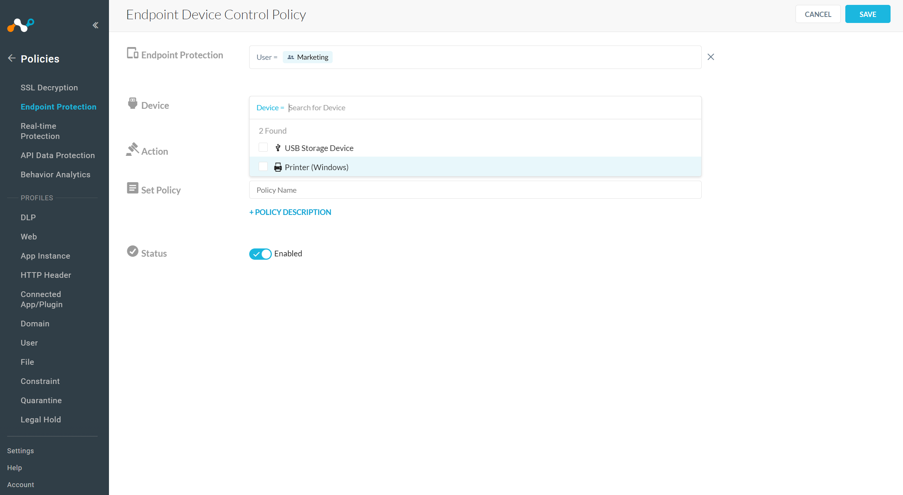
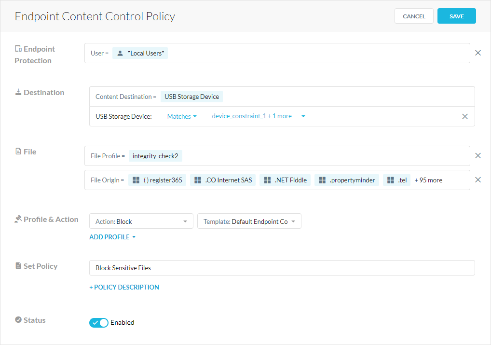
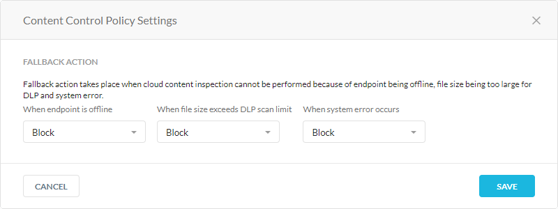

Endpoint Data Loss Prevention
Note
Contact your Sales Representative to enable this feature for your account.
Netskope Endpoint Data Loss Prevention (Endpoint DLP) provides data protection at the endpoint by utilizing Netskope's cloud DLP capabilities. You can use Endpoint DLP to monitor and govern USB storage devices connected to your endpoint. Endpoint DLP is an optional add-on capability to the Netskope Client and does not require deploying and managing a separate client or agent on the endpoint.
With Endpoint DLP, you can create Device Control and Content Control policies. Device Control policies enable granular control over which devices are allowed and which users can access them. Whereas, Content Control policies enable the full use of the Netskope DLP engine to inspect and control data movement between an endpoint and a USB mass storage device.
Endpoint DLP allows you to manage and govern endpoints to prevent sensitive content from being transferred to USB storage devices. You can:
Govern endpoint devices by creating device control, content control, and file origin policies.
Monitor endpoint activities such as inserting or removing USB storage devices, or file transfers to USB storage devices.
Block or trigger alerts when users write or transfer sensitive content to USB mass storage devices.
Respond to incidents and alert the user of their actions.
Coach the user through custom notification messages by allowing them to justify their actions or cancel them.
Benefits
Endpoint DLP provides the following benefits:
Minimizes resource utilization at the endpoint for a better user experience.
Inspects content for DLP violations for a stronger security posture.
Leverages the DLP policy framework to generate alerts and incidents.
Requirements
Endpoint DLP runs on either Windows or macOS.
If on Windows, Endpoint DLP requires Windows 10 or Windows 11 on 64-bit processors.
If on macOS, Endpoint DLP requires macOS 11, 12, or 13 running either on Intel x64 or Apple Silicon AND Full Disk Access .
The client must be able to reach https://epdlp-prod.netskope.io
Ensure you do the following before configuring Endpoint DLP:
Enabling Endpoint DLP on the client for macOS
Endpoint DLP on macOS requires Full Disk Access to function properly. Follow the following instructions to provide the process with Full Disk Access. If the client machine is not managed through an MDM profile then, the user must manually has to provide the Full Disk Access to the EPDLP client.
MDM Deployments on MacOS
The Full Disk Access workflow is covered for the following MDM solutions:
JAMF
Workspace ONE (Formerly Airwatch)
Microsoft Intune
Kandji
1. Install DLP on any test machine once.
2. Open Terminal and run the following command:
codesign -dr - /Library/Application\ Support/Netskope/EPDLP/netskopeendpointdlp.app
3. This will generate the following output:
Executable=/Library/Application Support/Netskope/EPDLP/netskopeendpointdlp.app/Contents/MacOS/netskopeendpointdlpdesignated => anchor apple generic and identifier "com.netskope.epdlp.client" and (certificate leaf[field.1.2.840.113635.100.6.1.9] /* exists */ or certificate 1[field.1.2.840.113635.100.6.2.6] /* exists */ and certificate leaf[field.1.2.840.113635.100.6.1.13] /* exists */ and certificate leaf[subject.OU] = "24W52P9M7W")
4. Copy the substring after the "designated =>" portion. For example,
anchor apple generic and identifier "com.netskope.epdlp.client" and (certificate leaf[field.1.2.840.113635.100.6.1.9] /* exists */ or certificate 1[field.1.2.840.113635.100.6.2.6] /* exists */ and certificate leaf[field.1.2.840.113635.100.6.1.13] /* exists */ and certificate leaf[subject.OU] = "24W52P9M7W")
JAMF
See JAMF for more information.
5. Open the JAMF Dashboard and navigate to Computer > Configuration and open the configuration that was created for NSclient.
6. Search for Privacy Preference Policy Control.
7. Use "com.netskope.epdlp.client" for Identifier, "Bundle ID" for Identifier Type and your copied substring in step 4 for Code Requirement.
8. Select "SystemPolicyAllFiles" under APP OR SERVICE and "Allow" under Access.
9. Save the configuration profile
Workspace ONE (Formerly Airwatch)
See Deploy Client on macOS Using VMware Workspace ONE for more information.
5. Navigate to Resources > Profiles and Baselines > Profiles.
6. Under Privacy Preferences, use "com.netskope.epdlp.client" for Identifier, "Bundle ID" for Identifier Type and your copied substring in step 4 for Code Requirement. Set System Policy All Files to "Allow".
Microsoft Intune
See Deploy Client on macOS Using Intune for more information
5. Navigate to Dashboard > Devices | macOS > Configuration Profiles.
6. Create an Identifier with "com.netskope.epdlp.client".
7. Set Allowed to "True. Use "your copied substring in step 4 for Code Requirement and bundle ID" for Identifier Type . Set System Policy All Files to "Allow".
Kandji
5. Navigate to Privacy Policy.
6. use "com.netskope.epdlp.client" for Identifier, "Bundle ID" for Identifier Type and your copied substring in step 4 for Code Requirement. Set System Policy All Files to "Allow".
Full Disk Access Error
If Full Disk Access is not enabled for the EPDLP client, the following error message may pop up after installing the EPDLP package through STAgent.pkg

The Proceed button opens the Full Disk Access Settings in System Preferences to add and enable the EPDLP client.
Enable the Full Disk Access to EPDLP client by adding and enabling “netskopeendpointdlp” in Full Disk Access settings.
System Preferences -> Security & Privacy -> Privacy -> Full Disk Access
Endpoint DLP is an add-on feature for the Netskope Client. To enable Endpoint DLP for the Netskope Client, contact your sales representative.
Once enabled, ensure you do the following before configuring Endpoint DLP:
You can define Device Control policies that allow users to access only corporate sanctioned USB devices or printers. You can leverage device control policies to take action based on the device.
In the Netskope UI, go to Policies > Endpoint Protection.
In the Device Control tab, click New Device Control Policy.
On the Endpoint Device Control Policy page:
Endpoint Protection: Select the users, user groups, or organizations affected by the policy.
Exclusions: Select the users, user groups, or organizations you want to exclude from the policy.
Device: Select USB storage device or Printer (Windows):
Any: Select to apply this policy to all corporate sanctioned and unsanctioned devices.
Matches: Select the constraint profiles that contain the devices you want to include in the policy. For example, you can select a constraint profile that includes corporate sanctioned devices you want to limit access to. Click + Create New to create a new constraint profile. This policy only applies to devices that match the selected constraint profiles.
Does not match: Select the constraint profiles that contain the devices you want to exclude from the policy. For example, you can select a constraint profile that includes all corporate sanctioned devices. Click + Create New to create a new constraint profile. This policy only applies to devices that don't match the selected constraint profiles.
Action: Select the action to be performed when the policy is triggered.
Allow: Select to allow users read and write access to the device or printer.
Make Read-Only: Select to only allow users read access to the storage device. This is only available for USB devices.
Note
WPD/phone devices do not support Read-Only policy actions. These devices will be blocked.
Block: Select to block users from accessing the device.
Set Policy: Enter a policy name. You can only use alphanumeric characters and symbols such as underscore (_), dash (-), and square brackets ([ ]). You cannot use the greater-than (>) or less-than (<) symbols in policy names. Optionally, You can click + Policy Description to add notes or information.
Status: Enable or disable the policy.
Click Save and then click Apply Changes.
You can define Content Control policies that allow users to copy data only to corporate sanctioned USB devices. You can leverage content control policies to take action based on the sensitive content in the file or where the file came from (i.e., file origin).
In the Netskope UI, go to Policies > Endpoint Protection.
Click the Content Control tab.
Click New Content Control Policy.
On the Endpoint Content Control Policy page:
Endpoint Protection: Select the users, user groups, or organizations affected by the policy.
Exclusions: Select the users, user groups, or organizations you want to exclude from the policy.
Destination: Select a criteria for the content destination (e.g., USB storage device).
Any: Select to apply this policy to all corporate sanctioned and unsanctioned USB storage devices.
Matches: Select the constraint profiles that contain the USB devices you want to include in the policy. For example, you can select a constraint profile that includes corporate sanctioned devices you want to limit access to. Click + Create New to create a new constraint profile. This policy only applies to devices that match the selected constraint profiles.
Does not match: Select the constraint profiles that contain the USB devices you want to exclude from the policy. For example, you can select a constraint profile that includes all corporate sanctioned devices. Click + Create New to create a new constraint profile. This policy only applies to devices that don't match the selected constraint profiles.
File: Select the file information for the policy.
File Profile: Select the file profiles that define the files you want to allow or block users from copying to a USB storage device. Click to create a new file profile. You also can click
 to go to the File Profile page.
to go to the File Profile page.File Origin: Select the predefined or custom applications and application instances that contain files you want to allow or block users from copying to a USB storage device. Under Exceptions, you can select the application instances you want to exclude from this policy. You also can click
to to go to the App Definition page and configure a custom app.
Profile & Action: Select the DLP profiles you want to use to inspect files for violations, and configure an action for each profile.
Allow: Select to allow users to transfer files that have no DLP violations from the USB storage device.
Alert: Select to receive alerts about files that are transferred to the USB storage device and contain DLP violations.
User Alert: Select to send a default or custom notification message to users when they transfer files with DLP violations to a USB storage device. Click + Create Template to create a notification message that allows them to proceed after they justify their reasons.
Block: Select to prevent users from transferring files to the USB storage device, and send a default or custom notification message to users when they transfer files with DLP violations. Click + Create Template to create a notification message that teaches them to adhere to your data policy.
Set Policy: Enter a policy name. You can only use alphanumeric characters and symbols such as underscore (_), dash (-), and square brackets ([ ]). You cannot use the greater-than (>) or less-than (<) symbols in policy names. Optionally, You can click + Policy Description to add notes or information.
Status: Enable or disable the policy.
Click Save and then click Apply Changes.
You can configure the fallback settings when the Netskope cloud can't perform content inspection for an endpoint because it's offline, the file size is too large, or there's a system error.
To configure the Content Control policy settings:
In the Netskope UI, go to Policies > Endpoint Protection.
Click the Content Control tab.
Click Settings.
In the Content Control Policy Settings window:
When endpoint is offline: Allow or block files from being copied to an endpoint device when the device is disconnected from the internet.
When file size exceeds DLP scan limit: Allow or block files from being copied to an endpoint device when the file size is larger than the DLP scan limit.
When system error occurs: Allow or block files from being copied to an endpoint device when there is a system error.
Click Save and then click Apply Changes.
Email Fallback
Note
This feature is currently in Controlled GA. Contact your Sales Representative or Support to enable this feature.
Email-DLP customers can configure fallback action for emails requiring content inspection in the event that DLP is unable to provide a verdict. When DLP triggers a fallback action, ‘x-netskope-fallback-action: true’ will be added to the email headers. Customers can then configure their downstream MTA to look for this header and take appropriate action for such scenarios.
Email DLP events corresponding to fallback action will include two additional parameters:
dlp_scan_failed: yes
dlp_failed_reason : (DLP scan file-size limit exceeded/ DLP Scan timeout/ DLP system error)
Netskope monitors your users and USB storage devices for policy violations. You can view user and device activity in Incidents and Skope IT:
Endpoint Events: Netskope logs all user and device activities that haven't violated a policy.
Alerts: Netskope generates an alert when users violate your Device or Content Control policies.
DLP Incidents: Netskope triggers a DLP incident when users violate your Content Control policies.